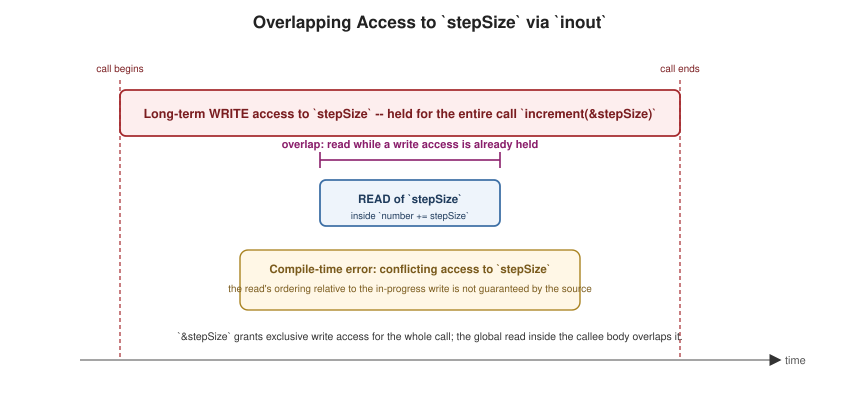

Memory Safety and Unsafe Pointers
|
This content was generated with the assistance of AI and should be verified against the official documentation before being relied on in production. |
Swift enforces memory safety by default — code cannot read uninitialized memory, access memory that has been deallocated, or observe two conflicting mutations of the same location out of order — while still exposing an explicit, opt-in unsafe layer for the rare cases where a lower-level, C-like view of memory is genuinely needed. Rust reaches the same guarantees at compile time through ownership and borrowing, compared in the Rust Reference’s Borrowing & References.
Conflicting Access to Memory
var stepSize = 1
func increment(_ number: inout Int) {
number += stepSize
}
// increment(&stepSize) // compile-time error: conflicting accesses to stepSizeA conflicting access happens when two accesses to the same memory location overlap and at least one of them is
a write — here, &stepSize grants increment long-term write access to stepSize for the duration of the
call, while the read of the global stepSize inside the function body (to compute number += stepSize) is a
second, overlapping access to that very same location. Swift must reject this, because with in-place mutation the
order in which the two accesses would actually happen is not something the source guarantees.
Exclusivity for inout Parameters and self in Mutating Methods
struct Player {
var health: Int
var energy: Int
mutating func restoreHealth() {
health = 10 // an implicit `inout` access to `self.health` for the duration of the call
}
}
var player = Player(health: 5, energy: 10)
extension Player {
mutating func shareHealth(with teammate: inout Player) {
balance(&teammate.health, &health) // two different instances: no conflict
}
}
func balance(_ a: inout Int, _ b: inout Int) { let avg = (a + b) / 2; a = avg; b = avg }
var oscar = Player(health: 10, energy: 10)
var maria = Player(health: 5, energy: 10)
oscar.shareHealth(with: &maria) // fine: two distinct variables
// oscar.shareHealth(with: &oscar) // compile-time error: overlapping access to the same instanceEvery inout parameter has long-term exclusive write access for its entire call, which is exactly what lets
increment(_:)'s conflicting global-stepSize access be caught above: the compiler statically tracks which
storage each inout argument names and rejects any overlap it can prove at compile time. A mutating method
similarly takes an implicit inout access to self for its whole body — restoreHealth()'s write to
self.health is really a write through an implicit inout self, which is why shareHealth(with:) calling
itself on the same instance (oscar.shareHealth(with: &oscar)) is rejected: self and teammate would name
overlapping storage, both requiring write access, at the same time.
Compile-Time vs. Run-Time Enforcement
var numbers = [1, 2, 3]
numbers.withUnsafeMutableBufferPointer { buffer in
// any attempt to also read/write `numbers` (not `buffer`) here would trip a run-time exclusivity check,
// since the compiler cannot always prove aliasing statically once raw storage is exposed like this
for i in buffer.indices where i > 0 {
buffer[i] += buffer[i - 1]
}
}Most exclusivity violations — like the two examples above — are caught at compile time, since the compiler
can see every access to a local variable or a known inout parameter directly in the source. Some violations
only become visible once a value’s storage is captured indirectly (through a closure, a computed property, or an
unsafe pointer, as with withUnsafeMutableBufferPointer above) — for those, Swift instead inserts a run-time
exclusivity check that traps the moment an actual conflicting access occurs. Both enforcement modes exist so that
the rule — no overlapping read+write or write+write of the same storage — stays a single guarantee the
optimizer can rely on, regardless of which stage happens to catch a given violation; release builds compiled with
-Ounchecked disable the run-time checks entirely, trading safety for speed once the code is already verified.

The Unsafe Layer
// Typed pointers
let count = 3
let typed = UnsafeMutablePointer<Int>.allocate(capacity: count)
typed.initialize(repeating: 0, count: count)
typed[0] = 10
typed[1] = 20
print(typed[0] + typed[1])
typed.deinitialize(count: count)
typed.deallocate()
// Raw pointers -- untyped bytes
let raw = UnsafeMutableRawPointer.allocate(byteCount: 16, alignment: 8)
raw.storeBytes(of: 42, toByteOffset: 0, as: Int.self)
print(raw.load(fromByteOffset: 0, as: Int.self))
raw.deallocate()
// Buffer pointers -- a pointer plus a count, viewed as a Collection
var values = [1, 2, 3, 4]
values.withUnsafeBufferPointer { buffer in // read-only view over the array's contiguous storage
print(buffer.reduce(0, +))
}
values.withUnsafeMutableBufferPointer { buffer in // read-write view; scoped strictly to the closure's duration
for i in buffer.indices { buffer[i] *= 2 }
}
// withUnsafeBytes -- a raw byte view without an explicit allocate/deallocate pair
values.withUnsafeBytes { rawBuffer in
print(rawBuffer.count) // byte count, not element count
}
// Unmanaged -- opts a class instance out of ARC's automatic retain/release
class Token {}
let token = Token()
let unmanaged = Unmanaged.passUnretained(token) // does NOT bump the strong reference count
let retrieved = unmanaged.takeUnretainedValue()
print(retrieved === token)UnsafePointer<T>/UnsafeMutablePointer<T> are typed pointers — the closest Swift equivalent to a C pointer,
requiring the caller to manage allocation, initialization, and deallocation manually and to never read past what
was actually initialized. UnsafeRawPointer/UnsafeMutableRawPointer instead view memory as untyped bytes,
useful when reinterpreting the same storage as different types (storeBytes(of:toByteOffset:as:) and
load(fromByteOffset:as:)). UnsafeBufferPointer/UnsafeMutableBufferPointer pair a pointer with a count and
conform to Collection, making them the natural way to get a raw, allocation-free view over an existing Array
or ContiguousArray's storage for the duration of a closure — withUnsafeBufferPointer/
withUnsafeMutableBufferPointer/withUnsafeBytes are the scoped, safer-to-use entry points that hand a buffer
pointer to a closure without ever exposing an allocation the caller must remember to free, since the pointer is
only valid for that closure’s duration. Unmanaged<Instance>+ is the escape hatch from ARC itself: it lets code
hold a reference to a class instance without contributing to its strong reference count, needed chiefly at C/
Objective-C interoperability boundaries (see
Interoperability with C,
Objective-C, and C++) where a raw void * or CFTypeRef must round-trip through code ARC does not manage.
Every API in this section is exempt from Swift’s usual memory and bounds safety — the type system no longer
protects against dangling pointers, use-after-free, or out-of-bounds access once code opts into it, which is why
it exists as a clearly separate, explicitly-named layer rather than blended into ordinary Swift code.
Safe Non-Owning Alternatives: Span and RawSpan (Swift 6.2)
var numbers2 = [10, 20, 30, 40]
func sum(of values: Span<Int>) -> Int { // Span: a safe, non-owning, bounds-checked view -- no pointer arithmetic
var total = 0
for i in values.indices { total += values[i] }
return total
}
numbers2.withSpan { span in
print(sum(of: span))
}SE-0447 introduces Span<Element> (and the untyped RawSpan) as a safe, non-owning alternative to
UnsafeBufferPointer for exactly the case that motivates most uses of the unsafe buffer types: a temporary,
contiguous, bounds-checked view over existing storage, with no allocation and no ownership of its own. Unlike an
unsafe pointer, Span cannot outlive the storage it views (the compiler enforces this with lifetime rules
similar to Rust’s borrow checking) and every access remains bounds-checked, so it recovers the performance
benefit of a direct memory view — no per-element Array overhead — without stepping outside memory safety at
all. Prefer Span/RawSpan over UnsafeBufferPointer/UnsafeRawBufferPointer in any new Swift 6.2+ code that
only needs a temporary read (or read-write) view and does not actually need pointer arithmetic or C
interoperability.
Exclusivity in Practice, and Where Safety Ends
Swift’s memory safety has three pillars: variables are initialized before use, memory is not accessed after it is freed, and accesses to a variable do not overlap in conflicting ways. The third rule — the law of exclusivity — says that while a variable is being modified, nothing else may read or write it. Swift enforces it at compile time where it can and by a run-time check where it cannot.
// A bookshelf counter used to show exclusivity, unsafe pointers and Span.
struct Shelf {
var count = 0
mutating func add(then report: () -> Void) {
count += 1
report()
}
}
func demoSwap() {
var a = 1
var b = 2
func swapValues(_ x: inout Int, _ y: inout Int) { (x, y) = (y, x) }
swapValues(&a, &b)
print("swapped:", a, b)
// swapValues(&a, &a) // error: inout arguments are not allowed to alias each other
}
func demoSafeReport() {
var shelf = Shelf()
// The closure does not touch `shelf`, so the access to `shelf` is exclusive and fine.
shelf.add { print("added one") }
// The fix for reading the count: read it after the mutating call returns.
print("count:", shelf.count)
}
// Unsafe buffer pointers are only valid inside the closure that receives them.
func demoPointers() {
var numbers = [10, 20, 30]
let sum = numbers.withUnsafeBufferPointer { $0.reduce(0, +) }
numbers.withUnsafeMutableBufferPointer { buf in
for i in buf.indices { buf[i] += 1 }
}
print("sum:", sum, "after:", numbers)
// A manually managed buffer: allocate, initialize, use, deinitialize, deallocate.
let p = UnsafeMutablePointer<Int>.allocate(capacity: 3)
p.initialize(repeating: 7, count: 3)
p[1] = 9
print((0..<3).map { p[$0] })
p.deinitialize(count: 3)
p.deallocate()
}
// Span (Swift 6.2) is a safe, bounds-checked, non-escaping view.
func demoSpan() {
let numbers = [10, 20, 30]
let span = numbers.span
print("span:", span.count, span[0], span[span.count - 1])
}
demoSwap()
demoSafeReport()
demoPointers()
demoSpan()swapped: 2 1
added one
count: 1
sum: 60 after: [11, 21, 31]
[7, 9, 7]
span: 3 10 30The commented line in demoSwap is rejected by the compiler (inout arguments are not allowed to alias each
other). The more interesting case is a mutating method whose closure reads the same value.
struct Shelf {
var count = 0
mutating func add(then report: () -> Void) {
count += 1
report()
}
}
var shelf = Shelf() // a global variable
shelf.add { print(shelf.count) } // compiles, then traps at run timeFor a local variable the compiler proves the overlap and reports a compile-time error ("overlapping accesses to 'shelf'"). For a global variable it cannot, so the check happens at run time and the program stops with the following message (the addresses vary):
Simultaneous accesses to 0x100398000, but modification requires exclusive access.
Previous access (a modification) started at Bookshelf`main + 68 (0x10039084c).
Current access (a read) started at: ...
Fatal access conflict detected.Why the Rule Exists
A mutating method may temporarily leave a value half updated (an array that has reallocated but not yet copied its
elements, say). A concurrent read would observe that torn state. Exclusivity lets the compiler optimise
without alias worries and is the foundation that makes inout and copy-on-write correct. The checks apply to
variables, properties, inout parameters and self in mutating methods, but not to let constants or
to accesses of different stored properties of a local struct variable, which the compiler can prove disjoint.
Staying Safe While Using Pointers
The pointer demonstration shows the discipline the unsafe APIs demand: the buffer pointer is valid only inside the
closure of withUnsafeBufferPointer, and a manually allocated pointer must go through the full cycle of
allocate, initialize, deinitialize and deallocate. Skipping deinitialize leaks non-trivial elements; calling
deallocate twice or reading after it is undefined behaviour with no diagnostic. Span gives the same zero-copy
read access as a buffer pointer but with bounds checks and a compiler-enforced lifetime: it cannot escape the
collection it borrows from, which is why the example creates it inside a function (using a Span of a global array at
the top level of a script is rejected with lifetime-dependent value escapes its scope).
Pitfalls
-
A closure that merely captures a variable also reads it: passing
{ print(shelf.count) }to a mutating method ofshelfis a conflict even though the closure looks harmless. -
The run-time check is on by default in release builds too;
-enforce-exclusivity=uncheckedremoves it and turns the conflict into undefined behaviour, which is rarely a good trade. -
Unmanaged, raw pointers andunsafeBitCastbypass ARC and the type system, so the compiler cannot warn about lifetime mistakes; keep them in a small, tested wrapper.
See Also
-
Functions —
inoutparameters and the copy-in/copy-out model exclusivity enforcement builds on. -
Structures and Classes —
mutatingmethods and copy-on-write storage, which relies on the same exclusivity guarantees. -
Automatic Reference Counting — ARC’s reference-counting model, a different memory-safety mechanism from exclusivity enforcement.
-
Interoperability with C, Objective-C, and C++ — where
Unmanagedand raw pointers most often surface in practice.